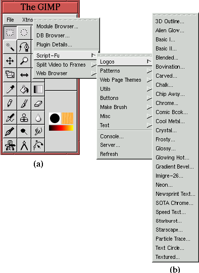
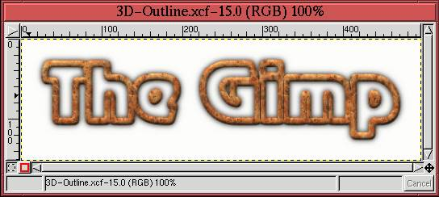

Next: 9.4 Tileable Backgrounds
Up: 9. Web-Centric GIMP
Previous: 9.2 Clickable Image Maps
9.3 Type Effects
Type effects can give a Web page character. They are a great way to
make Web page logos and titles, and they introduce stylistic elements
that say something about the content of your page. The GIMP can
produce great type effects, and the best news is that many effects
have been automated with scripts, using a
scripting language called Script-Fu.
Figure 9.19
Figure 9.19:
The Collection of Script-Fu Text Effect Scripts
|  |
shows that the scripts for creating type effects are contained in the
Toolbox:Xtns/Script-Fu/Logos menu. There are 27 different
effects in the Logos menu. This section presents one of them.
Figure 9.20(a)
Figure 9.20:
The 3D Outline Script and Helper Dialogs
|
shows the dialog for the 3D Outline
script. In this dialog, you can specify the text to be rendered, the
font and size (in pixels) of the text, and an image pattern that is
used to create the 3D outline. The dialog contains defaults for each
of these. For this example, the text string default is The Gimp.
Figure 9.20 shows how the defaults can be
changed. For example, the default font used in this example is
Rootsheavy but other fonts can be chosen using the Text tool.
As shown in Figure 9.20(b) the Text
tool can be invoked directly from the 3D-Outline dialog by
clicking on the Font menu button. The image pattern can also be
changed interactively by clicking on the Pattern menu button (the
button with the three dots). This brings up the Pattern
Selection dialog shown in
Figure 9.20(c). The small image squares in
the dialog are thumbnails of each available pattern. To get a larger
view of a pattern, use the mouse to click and hold on the pattern of
interest. This displays a larger thumbnail of the pattern, as shown
in Figure 9.20(d).
The result of running the 3D Outline script is shown in
Figure 9.21.
Figure 9.21:
Result of Running the 3D Outline Script-Fu Script
|  |
Note that caution is required when using the Script-Fu scripts to
generate text effects. Typically, text effects are constructed of
multiple layers, many with layer masks (for example, see
Section 8.7). Before using a result obtained using the
automated logo scripts, it is usually necessary to flatten the image
before saving it to a JPEG or GIF file format. This can be done by
choosing Flatten Image from the Layers menu.
Next: 9.4 Tileable Backgrounds
Up: 9. Web-Centric GIMP
Previous: 9.2 Clickable Image Maps
©2000 Gimp-Savvy.com